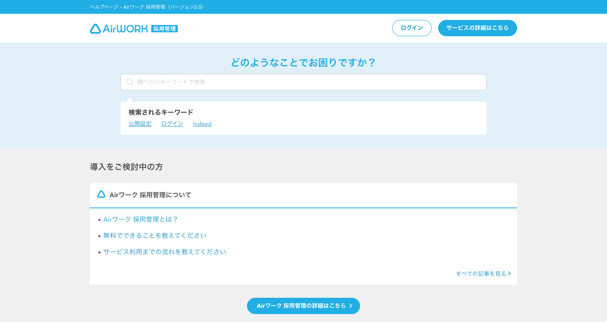

- 制作媒体
- PC・SP
- 制作期間
- 1日〜1ヶ月
- 制作人数
- ディレクター2名、デザイナー1名（担当領域）
担当内容
情報整理・構成設計 / ライティング・編集 / 図解・画面キャプチャ / トンマナ管理 / 関係者調整 / 進行管理
制作で意識したこと
01｜複雑な情報を、ユーザーが理解できる順番に整理
02｜操作画面と注釈を組み合わせ、手順を視覚的に説明
03｜サービス全体の文体・表現を統一
約1年半にわたり、新機能・機能改善に伴うFAQページの制作・運用を継続して担当しました。
プランナー作成の要件書をもとに、ユーザーが迷わず内容を理解できるよう、情報の整理・構成・文章表現を検討。仕様をそのまま説明するのではなく、ユーザーが実際に操作する流れを意識して、手順を分解・再構成しました。
操作画面だけでは伝わりにくい内容については、スクリーンショットへの注釈や図解を作成し、視覚的にも理解しやすいページになるよう工夫しました。プランナーやディレクターと内容を確認しながら、仕様との正確性とユーザーにとってのわかりやすさの両立を意識して制作しています。
また、個々のページだけでなく、Airサービス全体のトンマナや文体との統一も意識し、FAQ全体で一貫した情報提供ができるよう文章や表現を整えました。
平均5案件、多い時には10案件程度を並行して担当。公開スケジュールや案件の優先順位を整理し、関係者との確認・修正を行いながら、複数案件を並行して進行しました。
AIの活用
Claude code、Gem、Corsorなどを用いて効率化を図りました。Zendeskを用いた実装において、AIにJsonデータを渡しhtmlを自動生成させ、チェックまで自動化したことで実装に関する工数を7割削減できました。
また、AIセルフレビューの導入を行い、テキストガイドラインチェックや案出しをAIでサポート。自身の工数とディレクターのレビュー工数を削減しました。
FAQ制作実績
3件を抜粋して掲載しています。
面接希望日回答依頼機能の使い方
新卒採用の作成・掲載にあたっての確認事項
複数の求人を一括入稿したい